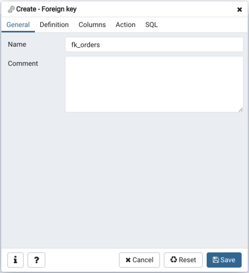
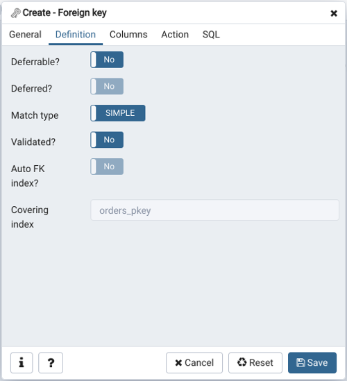
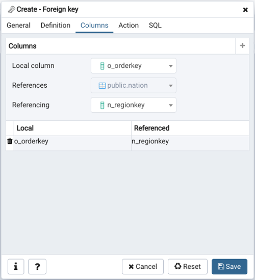
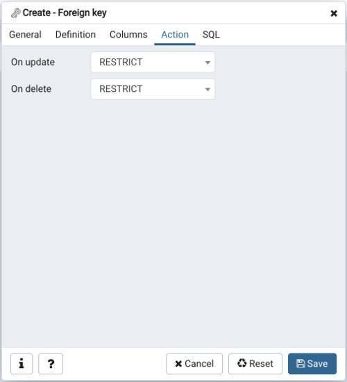
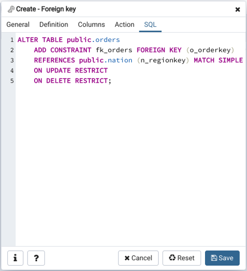

Foreign key Dialog¶
Use the Foreign key dialog to specify the behavior of a foreign key constraint. A foreign key constraint maintains referential integrity between two tables. A foreign key constraint cannot be defined between a temporary table and a permanent table.
The Foreign key dialog organizes the development of a foreign key constraint through the following dialog tabs: General, Definition, Columns, and Action. The SQL tab displays the SQL code generated by dialog selections.
Use the fields in the General tab to identify the foreign key constraint:
Use the Name field to add a descriptive name for the foreign key. The name will be displayed in the pgAdmin tree control.
Store notes about the foreign key constraint in the Comment field.
Click the Definition tab to continue.
Use the fields in the Definition tab to define the foreign key constraint:
Move the Deferrable? switch to the Yes position to specify the timing of the constraint is deferrable and can be postponed until the end of the statement. The default is No.
If enabled, move the Deferred? switch to the Yes position to specify the timing of the constraint is deferred to the end of the statement. The default is No.
Move the Match type switch specify the type of matching that is enforced by the constraint:
Select Full to indicate that all columns of a multicolumn foreign key must be null if any column is null; if all columns are null, the row is not required to have a match in the referenced table.
Select Simple to specify that a single foreign key column may be null; if any column is null, the row is not required to have a match in the referenced table.
Move the Validated switch to the Yes position to instruct the server to validate the existing table content (against a foreign key or check constraint) when you save modifications to this dialog.
Move the Auto FK Index switch to the No position to disable the automatic index feature.
The field next to Covering Index generates the name of an index if the Auto FK Index switch is in the Yes position; or, this field is disabled.
Click the Columns tab to continue.
Use the fields in the Columns tab to specify one or more reference column(s). A Foreign Key constraint requires that one or more columns of a table must only contain values that match values in the referenced column(s) of a row of a referenced table:
Use the drop-down listbox next to Local column to specify the column in the current table that will be compared to the foreign table.
Use the drop-down listbox next to References to specify the name of the table in which the comparison column(s) resides.
Use the drop-down listbox next to Referencing to specify a column in the foreign table.
Click the Add icon (+) to add a column to the list; repeat the steps above and click the Add icon (+) to add additional columns. To discard an entry, click the trash icon to the left of the entry and confirm deletion in the Delete Row popup.
Click the Action tab to continue.
Use the drop-down listboxes on the Action tab to specify behavior related to the foreign key constraint that will be performed when data within the table is updated or deleted:
Use the drop-down listbox next to On update to select an action that will be performed when data in the table is updated.
Use the drop-down listbox next to On delete to select an action that will be performed when data in the table is deleted.
The supported actions are:
NO ACTION |
Produce an error indicating that the deletion or update will create a foreign key constraint violation. If the constraint is deferred, this error will be produced at constraint check time if any referencing rows still exist. This is the default. |
RESTRICT |
Throw an error indicating that the deletion or update would create a foreign key constraint violation. This is the same as NO ACTION except that the check is not deferrable. |
CASCADE |
Delete any rows referencing the deleted row, or update the values of the referencing column(s) to the new values of the referenced columns, respectively. |
SET NULL |
Set the referencing column(s) to null. |
SET DEFAULT |
Set the referencing column(s) to their default values. There must be a row in the referenced table that matches the default values (if they are not null), or the operation will fail. |
Click the SQL tab to continue.
Your entries in the Foreign key dialog generate a SQL command (see an example below). Use the SQL tab for review; revisit or switch tabs to make any changes to the SQL command.
Example¶
The following is an example of the sql command generated by user selections in the Foreign key dialog:
The example shown demonstrates creating a foreign key constraint named territory_fkey that matches values in the distributors table territory column with those of the sales_territories table region column.
Click the Info button (i) to access online help.
Click the Save button to save work.
Click the Cancel button to exit without saving work.
Click the Reset button to restore configuration parameters.